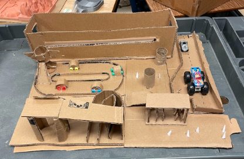
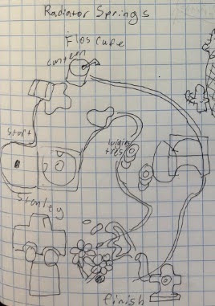
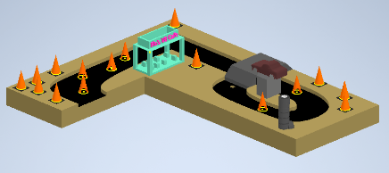

The built cardboard prototype of the full course, team project with Ashmeet Bedi, Eileen Do, Kellan Walsh, and Viswanathan Manickam.
Overview
The Mall of America set aside space in Minneapolis, MN for an indoor mini-golf course and put out a call for design concepts from firms across the country. Our team pitched a Cars-themed course aimed at mall patrons ages 6 to 60, built around a movie-screen trailer, a go-kart-style race track, a highway straightaway, a mountain and waterfall feature, and my section: Radiator Springs.
Team Roles
- Ashmeet Bedi, Design Manager
- Alan Siby, Design Engineer (Radiator Springs hole)
- Eileen Do, Design Engineer
- Kellan Walsh, Design Engineer
- Viswanathan Manickam, Design Engineer
My Part: Radiator Springs
My section reimagined the Radiator Springs town from Cars as a golf hole, working in a gas station structure, a rock/tunnel formation, and a curved cone-lined path for the ball to wind through. I started with a hand sketch mapping out the layout: from the starting point at Stanley, curving past Flo's Café and a lantern, and finishing near the town's rock arch, before modeling it in Autodesk Inventor and refining it into the final hole geometry.


Left: my original concept sketch mapping the hole's layout and theming. Right: the CAD drawing sheet with orthographic views and dimensions used to finalize the geometry.

The completed Radiator Springs hole in Autodesk Inventor: the gas station structure and rock/tunnel formation anchor the corner, with cones marking the ball's path around them.
Teammates' Sections
The rest of the team modeled the remaining four sections that completed the course:
- Movie-screen trailer: an oversized truck trailer housing a Cars movie screen, forming one long edge of the course.
- Race track: a go-kart-style loop with a checkered start/finish line.
- Highway: a straight lane with painted lane markers and parked cars, running alongside the race track.
- Mountain / waterfall: a raised terrain feature with a winding water channel connecting to my Radiator Springs corner.
Assembly
Once every section was modeled individually, we assembled them into a single course layout, with my Radiator Springs corner fitting alongside the highway on one side and connecting to the mountain and waterfall feature on the other, with the race track and movie-screen trailer completing the opposite half of the course.

The fully assembled course: top-down layout view, and two isometric views showing how each teammate's section connects into the whole.
Physical Build
After finalizing the CAD models, we built a full-scale cardboard prototype to validate the layout, proportions, and how each section physically connected to the next.

The cardboard prototype under construction and complete, with toy cars used to test scale and movement through each hole.
Conclusion
We were pleased with how the final model came together and how each section integrated into a single cohesive course, though we saw room for improvement. Leaning further into car references throughout the course could help it read as less childish while staying just as engaging for adults. The overall flow between holes could also be clearer, since participants sometimes weren't sure where the next hole began. The physical model itself was intentionally rough; it was built mainly to validate proportions and overall layout rather than serve as a finished product.
What I Learned
Designing one section of a larger shared course meant constantly checking my geometry against everyone else's dimensions, not just my own sketch. It pushed me to think about how a single hole needs to work both as its own themed experience and as a piece that physically connects to the sections on either side of it.